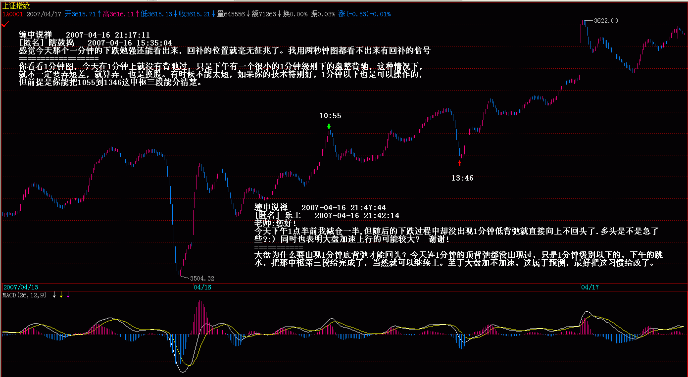
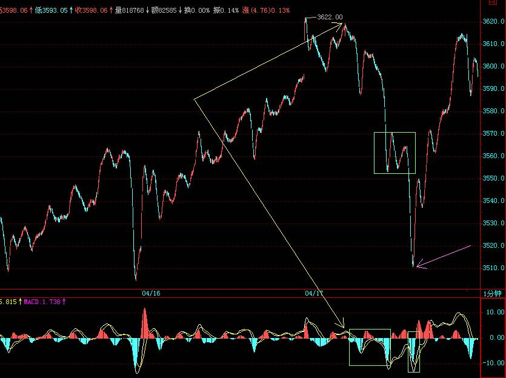
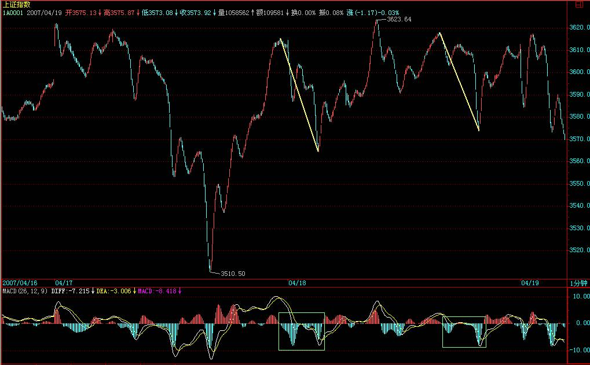

|
 |
教你炒股票45：持股与持币，两种最基本的操作
(2007-04-12
15:39:04)
发现很多人都有这样的糊涂概念，以为买入卖出才是股票的操作，是股票操作的所有了。其实，对于每一笔交易来说，买入卖出，1秒都不用就完成了，更多、更长时间的，填充在买入与卖出之间两种最基本的操作：持股与持币，才是更重要的操作。
假设你是按30分钟级别操作的，那么，在一个30分钟的买点买入后，就进入一个持股的操作中，根据本ID的理论，你很明确地知道，一个30分钟的卖点必然在前面等着，这卖点宣告从那30分钟买点开始的走势类型的结束。在这个卖点到来之前，你就只在持股这唯一的操作里。当这个30分钟的卖点出现时，卖出，然后就进入持币的操作里，直到一个30分钟的买点出现。
持股与持币，归根结底就是一种等待，等待那个被理论绝对保证的买卖点。所有股票的操作，归根结底，只有两个字：等待。
等待市场的买卖点，和等待彗星的到来不同，后者，可以很精确地知道具体的时间，而市场的买卖点是生长出来的。买卖点的生长过程，就是一个具体的走势类型的生灭过程。这些过程，不妨用一个30分钟第一类买点a开始的30分钟走势类型如何生灭为例子进行说明。
一个30分钟的走势类型，最低标准，就要形成一个30分钟的中枢，一旦这中枢形成，该走势类型随时结束都是符合理论的。这样，最弱的走势类型(注：上涨调整反之最强），就是该中枢一完成就结束。
在该例子里，就是从a点开始，三段重叠的5分钟走势类型结束后，该30分钟走势类型就结束了。用A1、A2、A3来依次代表这三段5分钟走势类型，显然，从a开始的这30分钟走势类型就可以用A1+A2+A3表示。那么，在实际操作中，如何事先知道，是否真的将形成这种最弱的走势？答案是否定的，不仅不可能事先知道是否真的要出现这种最弱的走势类型，而且走势类型的任何可能性都不可能被事先确认，这说明什么？说明预测是毫无意义的，走势是干出来的，是市场合力的结果，而不是被上帝所事先确定的，市场中没有上帝，市场的方向只有所有参与者的合力决定，大资金或高技巧，可以用自己的力量去引导市场，按照自己的剧本来演绎，但没有上帝可以完全事先确定市场走势类型完成的所有细节。
那么，如果一切都不可以预测，那本ID理论的意义何在？一切虽然不可以预测，但一切走势类型的可能结构与类型，却是可以分类的，每一类之间都有着明确的界限，因此，你唯一需要的，就是观察市场当下的走势，让市场去选择可能的结构与类型，然后根据市场的选择来选择。注意，这对于大资金来说一样的，无论任何规模的资金，归根结底都只是市场的分力，不是合力本身，企图把自己当合力本身，把自己装扮成上帝的，最终的结局都是死无葬身之地。只要是分力，就要观察市场当下的反应，根据市场反应的当下选择来选择。
例如，本ID可以点火二线股，可以把超级大盘股编写在剧本里，但本ID从来就不会觉得自己是上帝在操控市场，本ID不过是在和市场互动，一旦市场某方面的能量被引导耗尽，自然就要选择相反的操作来互动市场，这是一个复杂的当下感应过程，必须最敏锐地察觉市场能量的变动。
当第一个中枢形成后，走势类型可以随时结束，后面的分类比较复杂，今天时间太紧，写不完，在下堂课中将详细论述。但今天的课程，是一个思维上的关键，必须明确两点：
一、买卖点操作后，等待是一个最关键的过程，必须密切关注相应的走势类型的生长与分类选择，这一切都是当下的。
二、买卖点本质上是走势类型的生长状况与分类决定的，反过来，某些买卖点的出现，又使得走势类型的生长状况分类有一个明确的界定。这些都是观察市场细节的关键之处。
-----------------------------------------------------------------------------------------------------------------
=====从净资产到市值，大牛市的核变动力=====
你看看1分钟图，今天在1分钟上就没有背驰过，只是下午有一个很小的1分钟级别下的盘整背驰，这种情况下，就不一定要弄短差，就算弄，也是换股。有时候不能太短，如果你的技术特别好，1分钟以下也是可以操作的，但前提是你能把1055到1346这中枢三段能分清楚。(2007-04-16
21:17:11)

大盘为什么要出现1分钟底背弛才能回头？今天连1分钟的顶背弛都没出现过，只是1分钟级别以下的，下午的跳水，把那中枢第三段给完成了，当然就可以继续上。至于大盘加不加速，这属于预测，最好把这习惯给改了。
每日解盘(2007-04-17 15:38:56)
=====《货币战争和人民币战略》续五：从净资产到市值，资本血腥游戏的必然之路=====

今天之所以有这样的震荡，其实很简单，因为明天有重要数据公布，但今天有一个更重要的消息，就是以后到香港上市，一定要10亿美金以上，这就充分说明了，目前的管理层依然山东人，这么好的市场，能解决大问题，不充分利用，那真傻了，希望管理层继续山东人下去，但本ID依然不准备表扬他们。当然，今天还有人忽悠到某日报上写文章了，这种破伎俩都要使用，汉奸也真窝囊。
缠中说禅2007-04-18
16:41:09 [举报]
[匿名] 小八

|
|
|
|